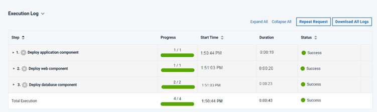
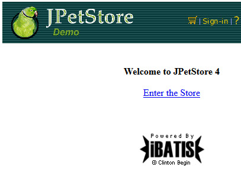

Lesson 3: Deploying the snapshots
To promote the snapshot to an environment, apply the snapshot when you run the application process.
About this task
Procedure
Results

You can view the running application at the following URL by substituting the host name of your target system for hostname. This is the host name of the agent that you configured in Configuring the agent and target system. In the URL, specify the tomcat.contextroot value that you entered for this environment after the port number.
http://hostname:8081/JPetStoreProd
If you browse to the Dogs category, you see that the Bichon section is present. As you saw in the previous tutorial, this entry indicates that the JPetStore-DB component deployed both the 1.0 and 1.1 versions.

What to do next
You used a snapshot to quickly apply a compatible set of component processes to an application environment and viewed the deployed web page.